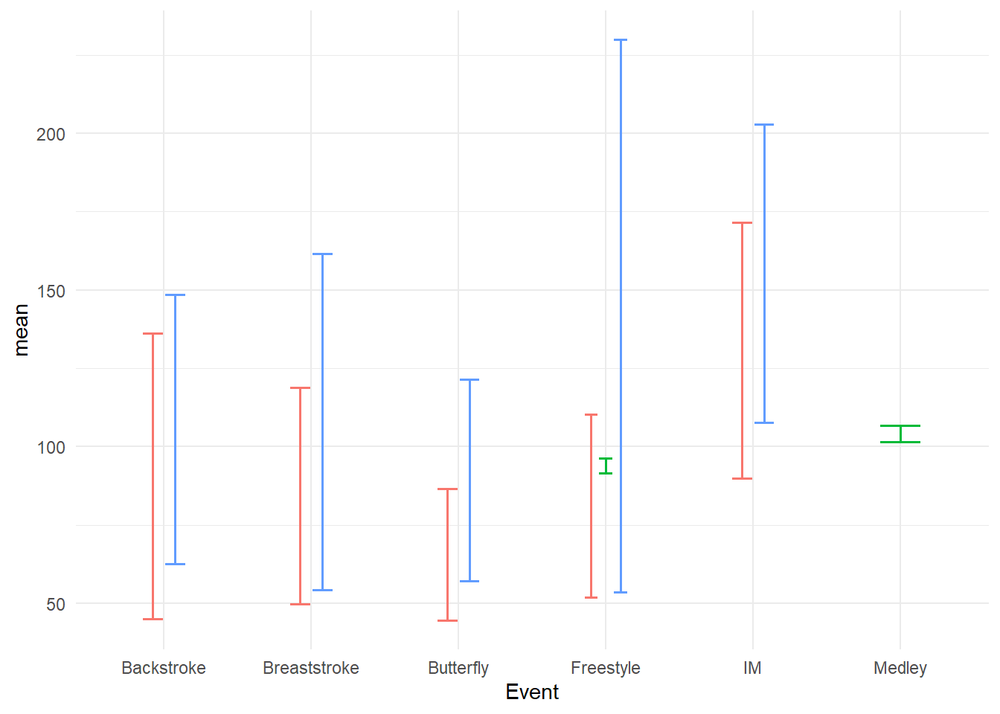
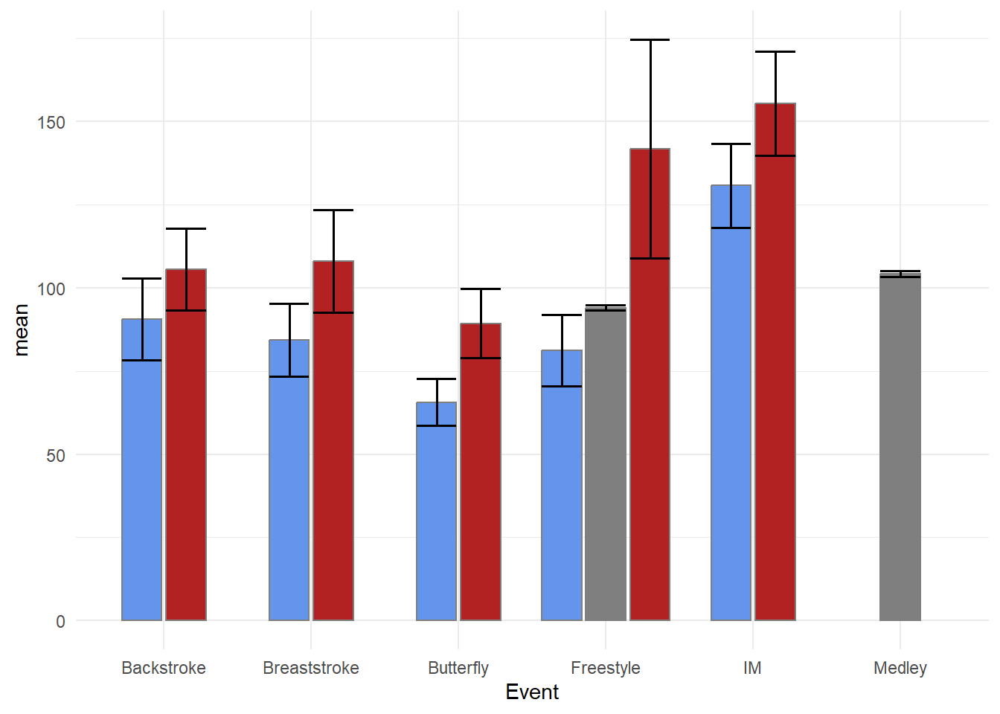

Visualizing uncertainty
Under construction.
This page is a work in progress and may contain areas that need more detail or that required syntactical, grammatical, and typographical changes. If you find some part requiring some editing, please let me know so I can fix it for you.
Overview
In this module, we will deal with some ways to visualize variability and uncertainty in data or models. In most cases, we will visualize descriptive statistics like the mean and standard error as well as confidence intervals. If you like using formulas for plotting, you should check out {ggformula}.
Uncertainty can be communicated in data visualization using lines, shading and colors, bars, distributions, rugs, etc. The goal is may be communicate variability on its own or to complement measures like means or medians, which represent best guesses (point estimates) about centers of distributions. Central tendency measures by their very nature fail to communicate Such measures don’t account for the differences among events in a distribution. Models and data, however, typically have associated uncertainty, which should be communicated in some way.
Here is an example of uncertainty metrics visualized for a data set. This visualization is similar to Figure 16.5 in Wilke’s text. This multi-layered plot is created using geom_point(), geom_linerange() and geom_pointrange() with annotations using geom_text(), geom_curve(), ggtext::geom_richtext(), and and annotate().
To Do
Readings
Reading should take place in two parts:
- Prior to class, the goal should be to familiarize yourself and bring questions to class. The readings from TFDV are conceptual and should facilitate readings from EGDA for code implementation.
- After class, the goal of reading should be to understand and implement code functions as well as support your understanding and help your troubleshooting of problems.
Before Class: First, read to familiarize yourself with the concepts rather than master them. Understand why one would want to visualize data in a particular way and also understand some of the functionality of {ggplot2}. I will assume that you attend class with some level of basic understanding of concepts.
Class: In class, some functions and concepts will be introduced and we will practice implementing {ggplot2} code. On occasion, there will be an assessment involving code identification, correction, explanation, etc. of concepts addressed in previous modules and perhaps some conceptual elements from this week’s readings.
After Class: After having some hands-on experience with coding in class, homework assignments will involve writing your own code to address some problem. These problems will be more complex, will involving problem solving, and may be open ended. This is where the second pass at reading with come in for you to reference when writing your code. The module content presented below is designed to offer you some assistance working through various coding problems but may not always suffice as a replacement for the readings from Wickham, Navarro, & Pedersen (under revision). ggplot2: Elegant Graphics for Data Analysis (3e).
External Functions
Provided in class:
view_html(): for viewing data frames in html format, from /r/my_functions.R
You can use this in your own work space but I am having a challenge rendering this of the website, so I’ll default to print() on occasion.
source(here::here("r", "my_functions.R"))Custom Functions
We will use some custom functions to handle some tasks this module.
Libraries
- {dplyr} 1.1.2: for selecting, filtering, and mutating
- {magrittr} 2.0.3: for code clarity and piping data frame objects
- {ggplot2} 3.4.3: for plotting
- {ggdist} 3.3.0: for plotting distributions
- {distributional} 0.3.2: for plotting distributional information
- {tidyr} 1.3.0: for tidying up models
- {broom} 1.0.5: for cleaning up models
Load libraries
library(dplyr)
library(magrittr)
library(ggplot2)
library(tidyr)
library(ggdist)
library(broom)
library(distributional)Loading Data
For this exercise, we will use some data from a 2023 CMS swim meet located at: “https://github.com/slicesofdata/dataviz23/raw/main/data/swim/cleaned-2023-CMS-Invite.csv”.
SWIM <- readr::read_csv("https://github.com/slicesofdata/dataviz23/raw/main/data/swim/cleaned-2023-CMS-Invite.csv",
show_col_types = F)Measurement
Measurement is the systematic assignment of numbers to an event, or object, based on the properties inherent in that event, or object. For example, the properties of an apple may be its color, size, shape, sweetness, acidity, texture, etc. The properties of an individual may be ones height, weight, BMI, genetics, hair color, eye color, graphical literacy, decision-making ability, working-memory capacity, etc.
Statistical research is the pursuit of understanding the systematic relationships between events that vary. A key goal of statistics is to understand the systematic relationship between predictor and outcome variables. If fact, we don’t really need statistics at all if there is no variability in measurement from person to person, event to event, or sample to sample.
Tables
Though tabular representations of data are visualizations, they are not what many think of when they think of data visualizations. Tables, however, are excellent when you need to convey exact numbers for examples, population statistics, prices, etc. Although we will likely address more table libraries and functions, The function takes a data frame, x, allows for adding a caption, aligns the caption (right by default), and specifies the format for markdown. It also fixes digits. We will illustrate the function usage in a moment.
The {kableExtra} library builds on the knitr::kable function for adding some detailing to table objects. You can do more using kableExtra::kbl() and kableExtra::classic() to add decorative details to a table, for example.
table_kbl <- function(
x,
caption = NULL,
align = "r",
format = "markdown",
position = "center",
footnote = NULL,
digits = 2,
...
) {
if (!require(kableExtra) ) {
install.packages("kableExtra", dep = T)
}
x |>
knitr::kable(format = format,
align = align,
caption = caption,
digits = digits
)
}Counts or Frequencies
We have seen before that we can obtain frequency counts from the data for plotting. The approach taken was using summarize() to create a new Count variable as seen here.
SWIM |>
group_by(Team, Event) |>
summarize(Count = dplyr::n()) |>
ungroup() |>
arrange(desc(Count), desc(Event)) |>
table_kbl(caption = "Event participation in 2023",
align = "r"
)| Team | Event | Count |
|---|---|---|
| Women | Freestyle | 47 |
| Men | Freestyle | 40 |
| Mixed | Medley | 15 |
| Mixed | Freestyle | 15 |
| Men | Butterfly | 15 |
| Women | IM | 13 |
| Women | Butterfly | 12 |
| Men | Breaststroke | 11 |
| Men | IM | 10 |
| Women | Breaststroke | 8 |
| Women | Backstroke | 8 |
| Men | Backstroke | 7 |
Notice that we can arrange() the data frame before passing to the function if we wanted something other than the default grouping order from group_by().
An alternative to the steps of group_by() and summarize() is to use count() rather than summarize. Like summarize(), the grouping structure is preserved, so we will keep the practice to ungroup() even though we are just passing to a table. If you choose not to ungroup(), make sure you do when your returned data frame is saved as an object in memory, saved to disk, or involves other variable mutations.
SWIM |>
group_by(Team, Event) |>
count() |>
ungroup() |>
arrange(desc(n), desc(Event)) |>
table_kbl(caption = "Event participation in 2023",
align = "r"
)| Team | Event | n |
|---|---|---|
| Women | Freestyle | 47 |
| Men | Freestyle | 40 |
| Mixed | Medley | 15 |
| Mixed | Freestyle | 15 |
| Men | Butterfly | 15 |
| Women | IM | 13 |
| Women | Butterfly | 12 |
| Men | Breaststroke | 11 |
| Men | IM | 10 |
| Women | Breaststroke | 8 |
| Women | Backstroke | 8 |
| Men | Backstroke | 7 |
Though geom_bar() creates counts for you by default, geom_col() can map the counts to x or y aesthetics. geom_col() makes the most sense in this case.
SWIM |>
group_by(Team, Event) |>
count() |>
ungroup() |>
filter(Event == "Freestyle") |>
ggplot(mapping = aes(x = Team, y = n)
) +
geom_col() +
labs(title = "Event participation in 2023", y = "Number of Athletes")If we did not want a bar plot, we could also make a lollipop plot, which will is basically a multi-layered plot that combines a geom_point() and a geom_segment(). Although this plot instance does not show some real-estate saving components of these plot types, we can make a slight detour into visual perception and attention.
SWIM |>
group_by(Team, Event) |>
count() |>
ungroup() |>
filter(Event == "Freestyle") |>
ggplot(mapping = aes(x = Team, y = n)) +
geom_point(size = 6) +
geom_segment(aes(x = Team,
xend = Team,
y = 0,
yend = n
),
linewidth = 1
) +
labs(title = "Event participation in 2023", y = "Number of Athletes")
All visual scenes contain a figure and a ground. For plots, the figure are the plot elements and the ground (background) is the theme on which the plot is plotted; it’s what’s not the plot. The eye is detecting contrast, or luminance contrast, from the light reflected from the figure of the plot compared to the light reflected from the ground. The contrast represents the difference between the or darker areas of interest (e.g., bars, points, lines, etc.) and lighter areas (the ground).
Visually, the figure elements of lollipop plots provide contrast between the points (figure) and the background (ground) which is specific to the vertical position (y-axis) of the points. Bar plots also have contrast luminance between the bars (figure) and the background but this contrast is not specific to the vertical height of the bar represented by terminating the horizontal edge. Rather, there is contrast along the sides and bottom of the bar as well. Moreover, the luminance contrast is not the same for all bars because longer bars have associated more contrast. For more on such issues, see NASA Ames discussing or Mozilla’s developer page on the issue.
Interim Summary
There are a few details here worth noting given the comparisons here. First, the bar plot and the table take up about the same page real estate yet the table conveys much more information. A table can be used to provide a lot of detail whereas a plot may allow a lot of detailing . Yes, we can create stacked or grouped bar plots to take up the same real estate but you should always ask what your the goal is for a plot and whether the plot is the best medium for visualizing data.
Second, the important aspect of the data presented in the table and the bar plot is that the number of events does not vary for a given grouping. Yes, the counts change across the team groupings and likely across years but for this year, event, and teams, the height of the bars do not vary. Where data do not vary, bar plots are a good choice.
Third, plots are visual objects that are processed by the visual system. Plot elements will affect how the visual system processes items, directs attention exogenously (bottom-up) rather than endogenously (top-down) which may have lasting influences on plot memorability.
Variability and Uncertainty in Data
When we deal with variables, rather than constants, we have variability. By definition, variables represent events that can be counted or measured and may take on different values. Variables are not constants. Whereas constants introduce no ambiguity, variability, or uncertainty, variables capture differences in measurement of event properties. These differences, or changes, in measurement value may occur from context to context, person to person, time to time, etc. When all individuals perform the same on some measurable event (e.g., math accuracy, long jump, money in pocket, etc.) there is no variability. By contrast, differences in measurement across individuals can reflect uncertainty about performance.
To the extent that an individual differs in number of millimeters jumped in 10 attempts of the standing broad jump, there is variability and uncertainty in this ability. Similarly, differences in the number of millimeters jumped by 10 individuals reveals differences or variability among individuals (plus or minus other influences affecting a single jumping instance). To the extent that differences among individuals are not the result of random influence, they must be due to other measurable properties (e.g., age, height, weight, strength, balance, motor coordination, angle of knee flexion, angle of hip flexion, take-off velocity, preparation, push-off, and float, etc.).
Of course, all jumping events can be aggregated in an effort to summarize and estimate the central tendency of jumping ability (e.g., mean, median, mode) but this aggregation process does not remove the change in measurement from jump to jump called variability.
Point Estimates
We can filter or an event, group the data, and summarize by groups using means in order to plot those mean point estimates are bars. This is the traditional, though not personally recommended, approach to plotting data in various disciplines. This will serve as a starting point for plots.
SWIM |>
group_by(Team, Event) |>
summarize(Mean = mean(Time)) |>
ungroup() |>
ggplot(aes(x = Team, y = Mean)) +
geom_col() +
labs(title = "Mean Freestyle Swim Time", y = "Seconds")`summarise()` has grouped output by 'Team'. You can override using the
`.groups` argument.Compared with the count data, the means are simply point estimates of the central tendency for sample data which are often used in service of estimating unknown population parameters. This is why a mean is called a point estimate as it estimate a single value, or point, of a distribution. Plotting means does not provide information about variability in the sample data or in the uncertainty around the mean’s ability to estimate the sample’s center generally and more specifically its corresponding population parameter.
Visualizing Variability
Whereas point estimates provide statistical information about central tendency and are represented visually using points, bars, or boxes, interval estimates and dispersion measures like standard deviations, standard errors of the mean, confidence intervals, etc. are represented using vertical lines, crossbars, or error bars. {ggplot2} has four geoms for visualizing statistical measures of variability: geom_crossbar(), geom_errorbar(), geom_linerange(), geom_pointrange(). Note: Legends may be hidden for illustrative purposes.
A descriptives() function
In order to create some visualizations, we will first summarize the data and then create a base plot to overlay different metrics for examples. We could use group_by(), summarize(), and ungroup() but you can always create your own functions to perform these redundant operations.
In order to summarize the data, we will use a custom function I wrote and named descriptives(), which serves as a “Offiziersmesser” (“officer’s knife”, aka Swiss Army Knife), type function for descriptive statistics. This function takes a vector or a data frame and returns the n, mean, trimmed mean, median, standard deviation, standard error, skewness, kurtosis, sum, minimum, maximum, range, interquartile range, median absolute deviation, and confidence interval values for a numeric vector. Both trim and conf can be adjusted as needed.
We will also calculate the range of years in order to facilitate the axis scale. And we will also make a simple function to cycle though some colors for making the points in the adjacent years easier to distinguish. We only need to colors for contrasting adjacent years,
How does descriptives() work? There are there parts.
data: the data object, which can be a vector or a data frame/tibblegroupby: the grouping parameter leveraginggroup_by()var: the outcome variable vector for describing statistically
You can source the function this way:
source("https://raw.githubusercontent.com/slicesofdata/dataviz23/main/R/functions/describe.R")Defining describe.RDone Defining describe.RLet’s get the descriptives() for the SWIM data, grouped by Team and Event for Time.
descriptives(data = SWIM,
groupby = c(Team, Event),
var = Time
)# A tibble: 12 × 23
Team Event n mean mean.trim mdn smallest_mode modefreq modeprop
<chr> <chr> <int> <dbl> <dbl> <dbl> <chr> <int> <dbl>
1 Men Backstroke 7 90.6 90.6 110. 53.95 1 0.143
2 Men Breaststro… 11 84.2 82.2 59.4 55.17 1 0.0909
3 Men Butterfly 15 65.6 62.3 52.4 49.66 1 0.0667
4 Men Freestyle 40 81.2 68.3 49.8 21.34 1 0.025
5 Men IM 10 131. 119. 120. 112.33 1 0.1
6 Mixed Freestyle 15 94.0 93.9 93.5 88.14 1 0.0667
7 Mixed Medley 15 104. 104. 104. 97.74 1 0.0667
8 Women Backstroke 8 106. 106. 129. 62.81 1 0.125
9 Women Breaststro… 8 108. 108. 109. 62.44 1 0.125
10 Women Butterfly 12 89.3 87.6 62.3 57.29 1 0.0833
11 Women Freestyle 47 142. 92.9 113. 24.16 1 0.0213
12 Women IM 13 155. 146. 133. 127.94 1 0.0769
# ℹ 14 more variables: sd <dbl>, se <dbl>, skew <dbl>, kurt <dbl>, min <dbl>,
# max <dbl>, range <dbl>, iqr <dbl>, mad <dbl>, sum <dbl>, ci.95l <dbl>,
# ci.95u <dbl>, ci.99l <dbl>, ci.99u <dbl>All metrics are lowercase, so if passing the returned object to ggplot(), we can plot the data by mapping mapping = aes(x = Team, y = mean).
descriptives(SWIM, groupby = c(Team, Event), var = Time) |>
filter(Event == "Freestyle") |>
group_by(Team) |>
ggplot(mapping = aes(x = Team, y = mean)
) +
geom_col() +
labs(title = "Mean Freestyle Swim Time", y = "Seconds")Let’s assign the returned descriptive statistics to an object for future plots.
SWIM_summary <- descriptives(SWIM, groupby = c(Team, Event), var = Time)For the base plot, the one thing that we will want to ensure is to map y = mean and x = Event from the summarized data frame. Keep in mind that the variables from descriptives() are lowercase. We will, however, map other variables to aesthetics as well and in later specific geom_*()s.
mapping = aes(x = Event,
y = mean,
fill = Team,
col = Team,
shape = Team
)swim_base_plot <- SWIM_summary %>%
ggplot(data = .,
mapping = aes(x = Event,
y = mean,
fill = Team,
col = Team,
shape = Team
)
)+
theme_minimal() +
theme(legend.position = "none")geom_pointrange():
A geom_pointrange() is quite simply a combination of a geom_point() and a geom_line(). It also provides more detail than a geom_linerange(), which is just a line connecting two points. For both geoms, you will need to specify where the line along the y axis starts and where it ends by mapping variables to ymin and ymax. For these examples, the values will be obtained using descriptives() but you could use {{dplyr}} to subset and summarize the data too. If you want to map other aes()thetics, for example, shape or color, you can do that as well.
geom_pointrange(
mapping = NULL,
data = NULL,
stat = "identity",
position = "identity",
...,
fatten = 4,
na.rm = FALSE,
orientation = NA,
show.legend = NA,
inherit.aes = TRUE
)geom_pointrange() with standard deviation
swim_base_plot +
geom_pointrange(mapping = aes(ymin = mean - sd,
ymax = mean + sd
),
position = position_dodge2(width = 1),
alpha = .8
)
One positioning issue that you will experience with geom_point() or geom_pointrange() relates to mapping a third variable to col, fill, or shape which were all mapped to Team. You have seen points plotted with these aesthetics before and addressed overplotting before by jittering them. When using geom_pointrange(), you can immediately notice a similar challenge; the points corresponding to the same x-axis position may have overlapping error variability lines. Because the lines are so thin, adjusting opacity will not really fix the problem.
swim_base_plot +
geom_pointrange(mapping = aes(ymin = mean - sd,
ymax = mean + sd
),
position = position_dodge2(width = 1),
alpha = .8
)
Adjusting positioning using position = position_jitter() will move the change point position but will do so that will be inconsistent across the x variable, whether categorical or numeric creating asymmetrical positioning.
swim_base_plot +
geom_pointrange(mapping = aes(ymin = mean - sd,
ymax = mean + sd
),
alpha = .8,
position = position_jitter()
)The problem is that jitter functions apply a random jittering for each level of x here. Setting the seed for the process will ensure consistency every function call but will not ensure consistency across each level of the x variable as seen in the plot.
When you really just want the points be get out of each others way, you can use position = position_dodge2() to make the points dodge side-to-side from the central positioning in a symmetrical manner. position_dodge2() relative to position_dodge() also does not require a group to be defined in the geom_*() or the global ggplot() object. However, you will likely need to set width to a value of 1 or less when your x variable is categorical in order to avoid something unappealing. Here are some examples.
suppressMessages(
plot(
gridExtra::arrangeGrob(
swim_base_plot +
geom_pointrange(mapping = aes(ymin = mean - sd,
ymax = mean + sd
),
alpha = .8,
position = position_dodge2(width = 2)
) +
labs(title = "position_dodge2(width = 2)",
tag = "A"),
swim_base_plot +
geom_pointrange(mapping = aes(ymin = mean - sd,
ymax = mean + sd,
col = Team),
alpha = .8,
position = position_dodge2(width = 1)
) +
labs(title = "position_dodge2(width = 1)", tag = "B"),
swim_base_plot +
geom_pointrange(mapping = aes(ymin = mean - sd,
ymax = mean + sd,
col = Team),
alpha = .8,
position = position_dodge2(width = .5)
) +
labs(title = "position_dodge2(width = .5)", tag = "C"),
swim_base_plot +
geom_pointrange(mapping = aes(ymin = mean - sd,
ymax = mean + sd,
col = Team),
alpha = .8,
position = position_dodge2(width = .25)
) +
labs(title = "position_dodge2(width = .25)", tag = "D"),
ncol = 2
)))Plot A will not achieve the dodge you desire and something something too small may not lead to enough change in position. Plot Β solves the issue but is challenged by the Gestalt perceptional grouping principle of proximity. If you are curious about these principles in UX design Nielsen Norman Group also has a post on this issue. The dodging associated with width = 1 does not facilitate the grouping of Team at each level of Event because the spacing between Teams for each event is the same as the spacing of Teams across Events. Reduce the dodge so that proximity grouping facilitates plot perception and interpretation. Keep in mind that plot aspect ratios (see here) can also affect positioning and proximity in some cases.
geom_pointrange() with standard error
geom_pointrange() with confidence intervals
swim_base_plot +
geom_pointrange(mapping = aes(ymin = ci.99l,
ymax = ci.99u
),
linewidth = .7, # make the line more prominent
position = position_dodge2(width = .5)
) +
coord_flip() +
labs(title = "Mean Times for Stags and Athenas by Event",
caption = "lines represent 99% confidence intervals\ncircle = Athena"
) 
geom_linerange():
A geom_linerange() simply visualizes a line plot that starts at one value and ends at another value.
geom_linerange(
mapping = NULL,
data = NULL,
stat = "identity",
position = "identity",
...,
na.rm = FALSE,
orientation = NA,
show.legend = NA,
inherit.aes = TRUE
)geom_linerange() with min and max
swim_base_plot +
geom_linerange(mapping = aes(ymin = min,
ymax = max
),
linewidth = 1 # make the line more prominent
)Such a visualization shows clearly where the data start and stop and allow for comparisons. You can also see when data were missing for Events. Out of the box, the bars will overlap, which will require some adjustment.
geom_linerange() with confidence intervals
swim_base_plot +
geom_linerange(mapping = aes(ymin = ci.99l,
ymax = ci.99u
),
linewidth = 1,
position = position_dodge2(width = .5)
) +
coord_flip() +
labs(title = "Mean Times for Stags and Athenas by Event",
caption = "lines represent standard errors of the mean\nred = Athena"
) Compared with geom_pointrange(), geom_linerange() only creates a perceptual grouping based on color. Because there are no points to plot, you cannot also change the shape of the points in order to make the grouping of Team redundant with color and point shape. Redundant encoding is something we will address in another module on designing perceptually-efficient visualizations). If you wish to achieve this redundancy, you will need to vary the lintetype. You can map the aesthetic to Team, set it specifically with scale_linetype_manual(), or code the line type into the data frame and use scale_linetype_identity(). You can specify linetype by name or by number: 0 (“blank”), 1 (“solid”), 2 (“dashed”), 3, 4, 5, 6, etc. When passing values in scale_linetype_manual(), keep in mind this is a vector and vectors can be numeric or character but not both so you cannot mix numbers and strings for line types.
For more on line type, read here
swim_base_plot +
geom_linerange(mapping = aes(ymin = ci.99l,
ymax = ci.99u,
linetype = Team
),
linewidth = 1,
position = position_dodge2(width = .5)
) +
scale_linetype_manual(values = c(Men = "dotted", Women = "longdash", Mixed = "solid")) +
coord_flip() +
labs(title = "Mean Times for Stags and Athenas by Event",
caption = "lines represent standard errors of the mean\nred = Athena"
) geom_errorbar():
Error bars are likely the most familiar visual form of of uncertainty you see in data visualization. Error bars represent the measurable error associated with data cases deviating from the distribution’s mean and is most typically the standard error of the mean. Without delving too deeply into concepts of statistics, the standard error of the mean is calculated as standard deviation / square root of the sample size. Although there are libraries like {plotrix} containing functions for it, its calculation is so simple you don’t need to bother with external libraries.
The describe() function calculates the standard error of the mean as se.
geom_errorbar() will require setting the ymin and ymax values for the error bars. Because the se reflects error around the mean, we will need to add and subtract the se to and from the mean in order to determine its upper and lower limits.
geom_errorbar() with standard error
swim_base_plot +
geom_errorbar(mapping = aes(ymin = mean - se,
ymax = mean + se
)
)
Out of the box, the bars will overlap and they will can been quite large, thus requiring some adjustment. We will position_dodge2() the bars to prevent overlapping, change the linewidth to be more prominent.
swim_base_plot +
geom_errorbar(mapping = aes(ymin = mean - se,
ymax = mean + se
),
position = position_dodge2(),
linewidth = .7,
width = .3 # make the horizontal bars shorter
)geom_errorbar() with confidence intervals
swim_base_plot +
geom_errorbar(mapping = aes(ymin = ci.99l,
ymax = ci.99u
),
position = position_dodge2(),
linewidth = .7,
width = .3 # make the horizontal bars shorter
)
Before even adding error bars, this geom_col() represents an excellent example of a pesky problem with out-of-the-box plots containing missing data. In any given data set, you might not have perfectly tidy data frames with data for all variable x variable combinations. For example, you might have data on the number of steps you walk during the morning and the afternoon (two levels of a time factor) for every day of the week (7 measures of another time variable) and you would have 2 x 7 = 14 bars to present in a plot. But if on Saturdays you sleep in past noon, you never have any data for the morning on Saturdays and you will have only 13 bars for your plot.
The above plot illustrates what geom_col() does when you have this data imbalance. When both bars are missing, you will see an empty space on the plot. You see that for 2021. But when only half the data are present, a single bar usurps the space of two bars.
*Making bars the same width**
When you read the docs for position_dodge() or position_dodge2(), you see that you can set a preserve argument (e.g., “should dodging preserve the”total” width of all elements at a position, or the width of a “single” element?“). Clearly, we want to fix the width using preserve = "single". The way that position_dodge() and position_dodge2() handle this aesthetically differs so we can use both for comparison. You can decide what looks better for your own plots.
suppressMessages(
plot(
gridExtra::arrangeGrob(
swim_base_plot +
geom_col(position = position_dodge(preserve = "single")) +
labs(title = 'position_dodge(preserve = "single"))',
tag = "A"
),
swim_base_plot +
geom_col(position = position_dodge2(preserve = "single")) +
labs(title = 'position_dodge2(preserve = "single"))',
tag = "B"
),
ncol = 1
)))The bars are now all the same width. For position_dodge2(), the single bar is center-aligned whereas position_dodge() aligns it to the left. position_dodge2() seems like a better option.
Add the error bars using geom_errorbar():
We now will add the error bars to the plot. Just as we did for geom_linerange(), we will map the ymin and ymax to the for the line to terminate.
Bars with Standard Errors
swim_base_plot +
geom_col(position = position_dodge2(preserve = "single")) +
scale_fill_manual(values = c(Women = "firebrick",
Men = "cornflowerblue",
Medley = "grey60"
)
) +
geom_errorbar(mapping = aes(ymin = mean - se,
ymax = mean + se
)
)
OK, This is hideous! The error bars are not positioned with the bars and they are rather wide. To address the positioning, remember that we dodged the bars/columns, specifically using position_dodge2(preserve = "single"), so we need to similarly adjust the positioning for the error bars.
swim_base_plot +
geom_col(position = position_dodge2(preserve = "single"),
alpha = .9,
col = "grey50" # make the bar outline color the same and
) +
scale_fill_manual(values = c(Women = "firebrick",
Men = "cornflowerblue",
Medley = "grey60"
)
) +
geom_errorbar(mapping = aes(ymin = mean - se,
ymax = mean + se
),
position = position_dodge2(preserve = "single"),
col = "black", # set them to all be the same color
linewidth = .6,
)Just remember that with multi-layered plots, the layers are added on top of existing ones. Starting with geom_errorbar() and then adding geom_col() will result in the lower portion of the error bars behind masked by the columns, especially if alpha = 1.
swim_base_plot +
geom_col(position = position_dodge2(preserve = "single"),
alpha = 1,
col = "grey50" # make the bar outline color the same and
) +
geom_errorbar(mapping = aes(ymin = mean - se,
ymax = mean + se
),
position = position_dodge2(preserve = "single", width = 1),
col = "black", # set them to all be the same color
linewidth = .6
) +
scale_fill_manual(values = c(Women = "firebrick",
Men = "cornflowerblue",
Medley = "grey60"
)
)
Confidence Intervals
We will create the same plot using confidence intervals.
swim_base_plot +
geom_col(position = position_dodge2(preserve = "single"),
alpha = .8,
col = "grey50" # make the bar outline color the same and
) +
geom_errorbar(mapping = aes(ymin = ci.99l,
ymax = ci.99u
),
position = position_dodge2(preserve = "single"),
col = "black", # set them to all be the same color
linewidth = .6
) +
scale_fill_manual(values = c(Women = "firebrick",
Men = "cornflowerblue",
Mixed = "grey60"
)
) +
labs(title = "Mean Time for Events in 2023",
tag = "",
x = NULL, y = "Seconds",
caption = "M = blue, F = red, Medley = grey\nbars = 99% CI"
)
The geom_pointrange() may likely be a better visualization of the data than the geom_errobar() paired with geom_col().
Models
Statistical models also have associated uncertainty because they are built on the data that have natural variability. We have seems some of this variability and uncertainty of models in the module on visualizing associations.
Let’s build a model, however, and then see it’s associated uncertainty.
FREE_100 <- SWIM |>
filter(Event == "Freestyle") |>
filter(Team != "Mixed") |>
filter(Distance == 100) |>
filter(Time < 500)Let’s not worry about whether a linear or nonlinear model is a better fit of the data and let’s not worry about the differences in variable relationship differs for Teams. Let’s just build a linear model to predict Time from Split50 to illustrate a point.
fit <- lm(Time ~ Split50, data = FREE_100)
fit |>
broom::tidy() |>
knitr::kable(format = "markdown")| term | estimate | std.error | statistic | p.value |
|---|---|---|---|---|
| (Intercept) | -0.0290832 | 1.6497412 | -0.017629 | 0.9860556 |
| Split50 | 2.0817834 | 0.0659113 | 31.584599 | 0.0000000 |
Standardizing model coefficients. Interpreting statistics is not the focus of this set of modules. To understand more about interpreting model coefficients and standardized coefficients, see this tutorial or search the web for others.
Model Uncertainty Using a Table
lm.beta::lm.beta(fit) |>
broom::tidy() |>
knitr::kable(format = "markdown")| term | estimate | std_estimate | std.error | statistic | p.value |
|---|---|---|---|---|---|
| (Intercept) | -0.0290832 | NA | 1.6497412 | -0.017629 | 0.9860556 |
| Split50 | 2.0817834 | 0.9857743 | 0.0659113 | 31.584599 | 0.0000000 |
The tables contain the model coefficients to quantify elements like the linear relationship between the variables, the error or uncertainty in the model fit, etc. We can see that Split50 predicts the Time for the 100 Freestyle. The association is not perfect, however. There is some error, or uncertainty, in the model as indicated by the model std.error.
Confidence Intervals for Model Fit
confint(fit) |>
knitr::kable(format = "markdown")| 2.5 % | 97.5 % | |
|---|---|---|
| (Intercept) | -3.403183 | 3.345016 |
| Split50 | 1.946980 | 2.216587 |
lm.beta::lm.beta(fit) |>
confint() |>
knitr::kable(format = "markdown")| 2.5 % | 97.5 % | |
|---|---|---|
| (Intercept) | NA | NA |
| Split50 | 0.8509705 | 1.120578 |
Model Uncertainty Using a Plot
Let’s apply geom_smoth() to add a fit line.
plot_lm <- FREE_100 |>
ggplot(mapping = aes(
x = Split50,
y = Time
)) +
geom_point(alpha = .5) +
geom_smooth(method = "lm",
fullrange = TRUE,
col = "black",
fill = "firebrick"
) +
theme_light()
plot_lm`geom_smooth()` using formula = 'y ~ x'
We can see the linear model fit as a line and the shaded area around that fit line indicates uncertainty of the model parameters. Because the model is not perfect, there is uncertainty about the true fit. Looking at ?geom_smooth, you will see the argument for level = 0.95 which helps define the uncertainty to visualize. Specifically, it defines the width of the shaded bands around the linear regression line in the plot. The bands represent the range within which the true regression line should lie given some degree of confidence. Thus, with level = 0.95, the confidence interval of 95%. We can see a different version by changing the level = .99 for a 99% confidence interval.
plot_lm99 <- FREE_100 |>
ggplot(mapping = aes(
x = Split50,
y = Time
)) +
geom_point(alpha = .5) +
geom_smooth(method = "lm",
fullrange = TRUE,
col = "black",
fill = "firebrick",
level = .99
) +
theme_light()
plot_lm99`geom_smooth()` using formula = 'y ~ x'
The bands are wider now because they are more likely to capture the true population parameter predicted by the model. The bands can vary in width based on the number of data points contributing to the prediction of y at any given x value but the bands will be most narrow at the model centroid (the point corresponding to the mean of x and the mean of y). Mapping aesthetics to a new point will illustrate this. The model needs to pass through this point.
aes(x = mean(FREE_100$Split50),
y = mean(FREE_100$Time)
)plot_lm <- FREE_100 |>
ggplot(mapping = aes(
x = Split50,
y = Time
)) +
geom_point(alpha = .5) +
geom_smooth(method = "lm",
fullrange = TRUE,
col = "black",
fill = "firebrick"
) +
theme_light() +
geom_point(aes(x = mean(FREE_100$Split50),
y = mean(FREE_100$Time)
),
size = 10,
shape = "*",
col = "blue"
)
plot_lm`geom_smooth()` using formula = 'y ~ x'
We can remove the model error from the plot using se = FALSE but but doing so is not very honest communication.
FREE_100 |>
ggplot(mapping = aes(
x = Split50,
y = Time
)) +
geom_point() +
geom_smooth(method = "lm",
fullrange = TRUE,
se = FALSE,
col = "firebrick"
) +
theme_light()`geom_smooth()` using formula = 'y ~ x'
But even if a linear model did fit the data perfectly, the set of coefficients obtained were from a single model and that single model is based on the athletes who participated in events. What would the model look like if it did not include just those athletes but instead includes athletes who were sick and sat the sidelines or those who could have been disqualified for some reason?
Bootstrap Models
rsample::bootstraps() will allow us to take samples from the full data set and run multiple models using various subsets of that full data set. Doing so will provide models that do not include best athletes, do not include worst athletes, include various mixtures, etc. The goal is not to teach bootstrapping methods but to help you understand how models are fit and how they differ, thus illuminating uncertainty in a different way than with geom_smooth(). The code is not provided as this just illustrates a plot of bootstrapped models.
You can see some bootstrapped mode coefficients here.
# A tibble: 6 × 8
splits id model term estimate std.error statistic p.value
<list> <chr> <lis> <chr> <dbl> <dbl> <dbl> <dbl>
1 <split [31/10]> Bootstrap00… <lm> (Int… 0.282 0.929 0.304 7.63e- 1
2 <split [31/10]> Bootstrap00… <lm> Spli… 2.06 0.0374 55.0 6.97e-31
3 <split [31/12]> Bootstrap00… <lm> (Int… -0.644 1.32 -0.487 6.30e- 1
4 <split [31/12]> Bootstrap00… <lm> Spli… 2.10 0.0521 40.3 5.10e-27
5 <split [31/12]> Bootstrap00… <lm> (Int… -0.142 1.33 -0.107 9.16e- 1
6 <split [31/12]> Bootstrap00… <lm> Spli… 2.08 0.0543 38.3 2.14e-26Because there are more than one model, we can visualize distributions of the coefficients as a histogram.

The mean and the standard deviation of the bootstrapped models:
| term | estimate_mean | estimate_sd |
|---|---|---|
| (Intercept) | -0.11 | 1.39 |
| Split50 | 2.08 | 0.06 |
Compare the mean with the coefficient from the single model:
| term | estimate | std.error | statistic | p.value |
|---|---|---|---|---|
| (Intercept) | -0.03 | 1.65 | -0.02 | 0.99 |
| Split50 | 2.08 | 0.07 | 31.58 | 0.00 |
Plotting Bootstrapped Model Fits (Variants)
Each model fit is plotted as a very this light red line in the plot. In fact, there are 1000 different models fit through the points. Because each model includes a difference subset of athletes, the mean of the variables will differ based on the data used for each model. Thus, each model has its own centroid so there is no single point through which all models must pass. Nevertheless, you can see the most narrow part and darkest coloring (indicating more lines overlapping) of the band is located near the location of the original centroid. Also, upper right part of the plot is lighter than the lower left because there are fewer points in the upper right and thus there is corresponding uncertainty to visualize.
Plotting Model Error Bars
Using {tidyr} we can create nested subsets of data using tidyr::nest() and then we can run models an each subset. We can group using .by and pass a vector of variable names for grouping. Make sure that you don’t have NAs in your data frames.
nested <- SWIM |>
filter(!is.na(Time)) |>
filter(!is.na(Split50)) |>
filter(Distance < 500) |>
filter(Event != "IM") |>
tidyr::nest(.by = c(Event, Distance))The first instance is in data.
nested$data[[1]]# A tibble: 14 × 8
Year School Team Relay Name Age Time Split50
<dbl> <chr> <chr> <chr> <chr> <dbl> <dbl> <dbl>
1 2023 Pomona-Pitzer-CA Mixed Relay <NA> NA 97.7 26.4
2 2023 Claremont-Mudd-Scripps-CA Mixed Relay <NA> NA 101. 24.4
3 2023 Claremont-Mudd-Scripps-CA Mixed Relay <NA> NA 102. 24.1
4 2023 Pomona-Pitzer-CA Mixed Relay <NA> NA 102. 25.0
5 2023 Claremont-Mudd-Scripps-CA Mixed Relay <NA> NA 103. 24.4
6 2023 Pomona-Pitzer-CA Mixed Relay <NA> NA 103. 27.5
7 2023 Claremont-Mudd-Scripps-CA Mixed Relay <NA> NA 104. 28.5
8 2023 Pomona-Pitzer-CA Mixed Relay <NA> NA 104. 26.8
9 2023 Pomona-Pitzer-CA Mixed Relay <NA> NA 104. 25.8
10 2023 Claremont-Mudd-Scripps-CA Mixed Relay <NA> NA 104. 24.8
11 2023 Pomona-Pitzer-CA Mixed Relay <NA> NA 105. 25.4
12 2023 Claremont-Mudd-Scripps-CA Mixed Relay <NA> NA 106. 29.9
13 2023 Claremont-Mudd-Scripps-CA Mixed Relay <NA> NA 107. 30.4
14 2023 Pomona-Pitzer-CA Mixed Relay <NA> NA 113. 30.9You see we have a tibble that contains nested subsets of data. There are not much data for some events but the goal is only to show how to visualize model error. We will now us Base R lapply() to apply a function to a list. For each nested data frame, the data will be .x. The model fit is returned and
SWIM |>
filter(!is.na(Time)) |>
filter(!is.na(Split50)) |>
filter(Distance < 500) |>
filter(Event != "IM") |>
tidyr::nest(.by = c(Event, Distance)) |>
dplyr::mutate(models = lapply(X = data,
FUN = function(x) lm(Time ~ Split50, data = x)
)
)# A tibble: 9 × 4
Event Distance data models
<chr> <dbl> <list> <list>
1 Medley 200 <tibble [14 × 8]> <lm>
2 Butterfly 100 <tibble [19 × 8]> <lm>
3 Freestyle 200 <tibble [49 × 8]> <lm>
4 Breaststroke 100 <tibble [11 × 8]> <lm>
5 Backstroke 100 <tibble [6 × 8]> <lm>
6 Backstroke 200 <tibble [9 × 8]> <lm>
7 Freestyle 100 <tibble [31 × 8]> <lm>
8 Breaststroke 200 <tibble [8 × 8]> <lm>
9 Butterfly 200 <tibble [8 × 8]> <lm> Great! We have a tibble of linear models for each Event and Distance pair. Using the {broom} library, perform some model cleaning using broom::tidy() to return a cleaned model and assign it as a column in the tibble. Using lapply, apply the broom::tidy() function on each model in the list. Finally, because the models are nested, tidyr::unest() them.
nested <- SWIM |>
filter(!is.na(Time)) |>
filter(!is.na(Split50)) |>
filter(Distance < 500) |>
filter(Event != "IM") |>
tidyr::nest(.by = c(Event, Distance)) |>
dplyr::mutate(models = lapply(X = data,
FUN = function(x) lm(Time ~ Split50, data = x)
),
tidy_mods = lapply(X = models, FUN = broom::tidy)
) |>
tidyr::unnest(cols = tidy_mods)The tibble is messy, so let’s clean it up a bit by removing the intercept term. Also, we don’t need columns like models or data.
nested <- SWIM |>
filter(!is.na(Time)) |>
filter(!is.na(Split50)) |>
filter(Distance < 500) |>
filter(Event != "IM") |>
tidyr::nest(.by = c(Event, Distance)) |>
dplyr::mutate(models = lapply(X = data,
FUN = function(x) lm(Time ~ Split50, data = x)
),
tidy_mods = map(models, broom::tidy)
) |>
tidyr::unnest(cols = tidy_mods) |>
filter(term != "(Intercept)") |>
select(-c(models, data))
nested # A tibble: 9 × 7
Event Distance term estimate std.error statistic p.value
<chr> <dbl> <chr> <dbl> <dbl> <dbl> <dbl>
1 Medley 200 Split50 1.03 0.298 3.45 4.80e- 3
2 Butterfly 100 Split50 1.98 0.0624 31.7 1.46e-16
3 Freestyle 200 Split50 4.15 0.319 13.0 3.67e-17
4 Breaststroke 100 Split50 2.15 0.0868 24.7 1.38e- 9
5 Backstroke 100 Split50 1.69 0.0740 22.8 2.18e- 5
6 Backstroke 200 Split50 4.27 0.348 12.3 5.43e- 6
7 Freestyle 100 Split50 2.08 0.0659 31.6 5.16e-24
8 Breaststroke 200 Split50 3.76 0.427 8.80 1.20e- 4
9 Butterfly 200 Split50 3.94 0.960 4.10 6.35e- 3So we now have a tibble with nested model coefficients. We can visualize some of the models and their errors. In the tibble, estimate is the estimate and std.error is the error. We can create a 95% confidence interval with lower and upper bounds by subtracting and adding 1.96*std.error (use 1.645 for 90% CI or 2.576 for a 99% CI). Map the color to the Distance column.
nested |>
mutate(Distance = as.character(Distance)) |>
ggplot(mapping = aes(
x = Event, y = estimate,
ymin = estimate - 1.96*std.error,
ymax = estimate + 1.96*std.error,
col = Distance
)) +
geom_pointrange(position = position_dodge2(width = .5)
) +
scale_y_continuous(n.breaks = 20) +
theme(legend.position = "top")Using the {ggdist} and {distributional} libraries, we can plot the distributions of errors as well.
nested |>
mutate(Distance = as.character(Distance)) |>
ggplot(mapping = aes(x = estimate, y = Event, col = Distance)) +
ggdist::stat_dist_halfeye(
mapping = aes(dist = distributional::dist_normal(
mu = estimate,
sigma = std.error)
),
point_size = 3
)Box Plots
Distributions can also be visualized with box plots as we have seen before. As with geom_col() used with geom_errorbar(), we will need to change the boxplot spatial positioning using position = position_dodge2(preserve = "single") so that there are boxes that are twice as wide as others, unless you like that aesthetic.
Let’s assign some color to col_values to use in the plot.
Using stat_summary()
The above plots can also be created with stat_summary() as long as you specify the fun for calculating the statistics and the geom for the plot type. Because stat_summary() calculates the statistics, you can use the original data frame. However, in some instances, the function arguments are likely not as intuitive.
pointrange:
A “pointrange” is just a point plot without other values like fun.min and fun.max.
SWIM |>
ggplot(mapping = aes(x = Event, y = Time, col = Team)) +
stat_summary(fun = mean,
geom = "pointrange",
position = position_dodge2(width = 1)
)Warning: Removed 12 rows containing missing values (`geom_segment()`).But ranges are very crude and do not represent average dispersion in the data.
SWIM |>
ggplot(mapping = aes(x = Event, y = Time, col = Team)) +
stat_summary(fun = mean,
geom = "pointrange",
fun.min = min,
fun.max = max,
position = position_dodge2(width = 1)
)
Rather, for fun.max and fun.min, we can pass a function(x) mean(x) + sd(x) / sqrt(length(x)) for the standard error.
SWIM |>
ggplot(mapping = aes(x = Event, y = Time, col = Team)) +
stat_summary(fun = mean,
geom = "pointrange",
fun.max = function(x) mean(x) + sd(x) / sqrt(length(x)), # se
fun.min = function(x) mean(x) - sd(x) / sqrt(length(x)), # se
position = position_dodge2(width = 1)
)
errorbar:
For an errorbar, just change the geom.
SWIM |>
ggplot(mapping = aes(x = Event, y = Time, col = Team)) +
stat_summary(fun = mean,
geom = "errorbar",
fun.max = function(x) mean(x) + sd(x) / sqrt(length(x)), # se
fun.min = function(x) mean(x) - sd(x) / sqrt(length(x)), # se
position = position_dodge2(width = 1),
width = .5,
linewidth = 1
)But if you wanted to add a layer, for example, the points, they will likely not align with the error bars. You also cannot set a seed.
SWIM |>
ggplot(mapping = aes(x = Event, y = Time, col = Team)) +
stat_summary(fun = mean,
geom = "errorbar",
fun.max = function(x) mean(x) + sd(x) / sqrt(length(x)), # se
fun.min = function(x) mean(x) - sd(x) / sqrt(length(x)), # se
position = position_dodge2(width = 1),
width = .5,
linewidth = 1
) +
stat_summary(fun = mean,
geom = "point",
position = position_dodge2(width = 1),
)Session Info
R version 4.3.1 (2023-06-16 ucrt)
Platform: x86_64-w64-mingw32/x64 (64-bit)
Running under: Windows 11 x64 (build 22621)
Matrix products: default
locale:
[1] LC_COLLATE=English_United States.utf8
[2] LC_CTYPE=English_United States.utf8
[3] LC_MONETARY=English_United States.utf8
[4] LC_NUMERIC=C
[5] LC_TIME=English_United States.utf8
time zone: America/Los_Angeles
tzcode source: internal
attached base packages:
[1] stats graphics grDevices utils datasets methods base
other attached packages:
[1] yardstick_1.2.0 workflowsets_1.0.1 workflows_1.1.3
[4] tune_1.1.2 tibble_3.2.1 rsample_1.2.0
[7] recipes_1.0.7 purrr_1.0.2 parsnip_1.1.1
[10] modeldata_1.2.0 infer_1.0.5 dials_1.2.0
[13] scales_1.2.1 tidymodels_1.1.1 kableExtra_1.3.4
[16] distributional_0.3.2 broom_1.0.5 ggdist_3.3.0
[19] tidyr_1.3.0 ggplot2_3.4.3 magrittr_2.0.3
[22] dplyr_1.1.2
loaded via a namespace (and not attached):
[1] rstudioapi_0.15.0 jsonlite_1.8.7 datawizard_0.8.0
[4] farver_2.1.1 rmarkdown_2.24 ragg_1.2.5
[7] vctrs_0.6.3 benchmarkme_1.0.8 webshot_0.5.5
[10] forcats_1.0.0 htmltools_0.5.6 haven_2.5.3
[13] curl_5.0.2 cellranger_1.1.0 pracma_2.4.2
[16] sass_0.4.7 parallelly_1.36.0 htmlwidgets_1.6.2
[19] rootSolve_1.8.2.4 lubridate_1.9.2 gt_0.9.0
[22] commonmark_1.9.0 lifecycle_1.0.3 iterators_1.0.14
[25] pkgconfig_2.0.3 Matrix_1.6-1 R6_2.5.1
[28] fastmap_1.1.1 future_1.33.0 digest_0.6.33
[31] Exact_3.2 colorspace_2.1-0 furrr_0.3.1
[34] patchwork_1.1.3 rprojroot_2.0.3 textshaping_0.3.6
[37] gtsummary_1.7.2 labeling_0.4.2 fansi_1.0.4
[40] timechange_0.2.0 httr_1.4.7 mgcv_1.8-42
[43] compiler_4.3.1 here_1.0.1 proxy_0.4-27
[46] doParallel_1.0.17 bit64_4.0.5 withr_2.5.0
[49] backports_1.4.1 performance_0.10.4 MASS_7.3-60
[52] lava_1.7.2.1 caTools_1.18.2 gld_2.6.6
[55] tools_4.3.1 future.apply_1.11.0 qqconf_1.3.2
[58] nnet_7.3-19 quadprog_1.5-8 glue_1.6.2
[61] nlme_3.1-162 gridtext_0.1.5 grid_4.3.1
[64] memuse_4.2-3 see_0.8.0 generics_0.1.3
[67] qqplotr_0.0.6 gtable_0.3.4 labelled_2.12.0
[70] tzdb_0.4.0 class_7.3-22 data.table_1.14.8
[73] lmom_3.0 hms_1.1.3 xml2_1.3.5
[76] utf8_1.2.3 ggrepel_0.9.3 foreach_1.5.2
[79] pillar_1.9.0 markdown_1.8 stringr_1.5.0
[82] vroom_1.6.3 robustbase_0.99-0 benchmarkmeData_1.0.4
[85] splines_4.3.1 lhs_1.1.6 ggtext_0.1.2
[88] moments_0.14.1 lattice_0.21-8 survival_3.5-5
[91] bit_4.0.5 lm.beta_1.7-2 tidyselect_1.2.0
[94] knitr_1.43 gridExtra_2.3 svglite_2.1.1
[97] xfun_0.40 expm_0.999-7 hardhat_1.3.0
[100] timeDate_4022.108 DEoptimR_1.1-1 stringi_1.7.12
[103] DiceDesign_1.9 yaml_2.3.7 boot_1.3-28.1
[106] evaluate_0.21 codetools_0.2-19 twosamples_2.0.1
[109] cli_3.6.1 rpart_4.1.19 xtable_1.8-4
[112] DescTools_0.99.50 systemfonts_1.0.4 munsell_0.5.0
[115] Rcpp_1.0.11 readxl_1.4.3 globals_0.16.2
[118] png_0.1-8 parallel_4.3.1 ellipsis_0.3.2
[121] gower_1.0.1 readr_2.1.4 bayestestR_0.13.1
[124] bitops_1.0-7 opdisDownsampling_0.8.2 GPfit_1.0-8
[127] listenv_0.9.0 broom.helpers_1.14.0 viridisLite_0.4.2
[130] mvtnorm_1.2-2 ipred_0.9-14 prodlim_2023.03.31
[133] e1071_1.7-13 insight_0.19.3 crayon_1.5.2
[136] rlang_1.1.1 rvest_1.0.3